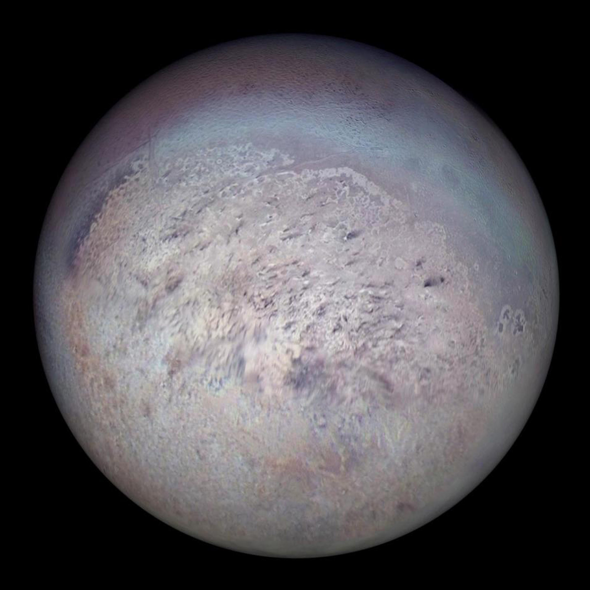

Нептун има 14 известни естествени спътника. Най-големият от тях е Тритон, открит от Уилям Ласел само 17 дни след откриването на Нептун. През 2004 г. е оповестено откритието на пет малки спътника, имащи неправилна форма. Тритон е достатъчно близо до Нептун, за да бъде заключен в синхронна орбита, бавно се приближава навътре и евентуално ще бъде разкъсан от гравитационното поле на планетата. Тритон е достатъчно масивен да постигне хидростатично равновесие и да задържи тънка атмосфера, способна да образува облаци и мъгли. Атмосферата и повърхността му са основно съставени от азот, както и малки количества метан и въглероден оксид. Повърхността на Тритон изглежда сравнително млада и вероятно е видоизменяна от вътрешно протичащи процеси през последните няколко милиона години. Средната повърхностна температура е около −235,2 °C.
Поради интензивното си нагряване от приливните сили на Нептун, за Тритон се смята, че в миналото е бил подходящ за развитието на живот в течните слоеве под повърхността. Наличието на живот към наши дни обаче е малко вероятно поради отсъствието на приливно нагряване, голямата отдалеченост от Слънцето и факта, че орбитата на спътника се намира във вътрешността на йонизиращата магнитосфера на Нептун.

Снимка на Тритон